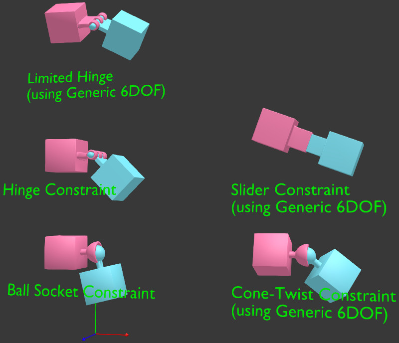
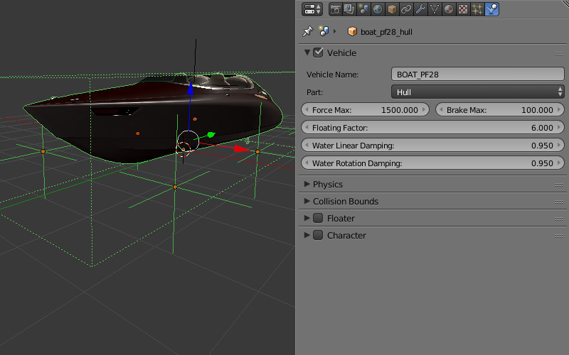

Физика¶
Содержание
Подготовка к использованию¶
Для задействования физики на сцене необходимо установить флаг Enable Physics в панели Physics на сцене.

Статический тип физики¶
Может использоваться как ограничитель движения других объектов, например, для определения столкновений с ландшафтом, стенами и т.д. В настройках физики такого объекта для опции Physics Type должно быть выбрано значение Static (значение по умолчанию).

Меш может быть покрыт одним или несколькими физическими материалами. Во вкладке Material должна быть активирована панель Special: Collision.

Опция Ghost исключает материал из физических взаимодействий, но сообщает приложению о контакте с ним. Пример - определение, что игровой персонаж находится на вертикальной лестнице.

Поле Collision ID предназначено для определения столкновения со специфическим материалом, и может быть оставлено пустым. Пример использования Collision ID - определение нахождения игрового персонажа на разных типах покрытия ландшафта - трава, песок, деревянное покрытие и т.д.
Поле Margin позволяет настроить ширину зоны, в которой происходит соударения с сеткой данного объекта. Данная настройка позволяет улучшить стабильность симуляций столкновений объектов.
Также в этой панели располагаются физические настройки материала. Поддерживаются следующие настройки: трение (Friction), упругость (Elasticity).
Поле Collision Group отвечает за физическую группу, к которой относится материал. Поле Collision Mask определяет все физические группы, с которыми будет взаимодействовать данный материал.
Динамический тип физики¶
Предназначен для симуляции движения жесткого тела.

В настройках панели Physics такого объекта должен быть установлен флаг Object Physics. Поле Collision ID предназначено для определения столкновения со специфическим объектом (например, прикрепленный к камере объект для определения близости FPS персонажа к предметам), и может быть оставлено пустым.
Опция Physics Type может иметь значения: Rigid Body (с вращениями) или Dynamic (без вращений). В настройках Collision Bounds может быть выбран тип коллайдера. Поддерживаются: Box, Capsule, Sphere, Cylinder, Cone. Так же можно настроить: массy (Mass), демпфирование (Damping) - для перемещения (Translation) и вращения (Rotation).
Поле Collision Group отвечает за физическую группу, к которой относится объект.
Поле Collision Mask определяет все физические группы, с которыми будет взаимодействовать данный объект.
{kind=link}
Для материала такого объекта поддерживаются: трение (Friction), упругость (Elasticity). В случае использования на одном меше нескольких материалов физические настройки считываются с первого из них.
Для объекта-камеры должна использоваться настройка Physics Type = Dynamic, должен быть установлен флаг Object Physics.
Ограничители (Constraints)¶
Физические ограничители используются для уменьшения числа степеней свободы объектов.
{kind=link}
Установка физического ограничителя (Rigid Body Joint) на объект происходит в панели Object Constraints. Поддерживаемые типы (Pivot Type): Ball, Hinge, Cone Twist, Generic 6 DoF. Физический ограничитель можно установить на один из двух взаимодействующих объектов, при этом другой выступает в качестве цели (Target). Оба объекта могут быть со статическим и/или динамическим типом физики. В ограничителях (кроме Ball) могут настраиваться пределы перемещения и вращения.

Колесные транспортные средства¶
Модель транспортного средства (ТС) должна состоять из 6 отдельных объектов - шасси, 4 колеса, рулевое колесо. Центр меша шасси должен соответствовать центру масс. Центры мешей колес и рулевого колеса должны располагаться на осях вращения. Рулевое колесо должно быть ориентировано в локальной системе координат: X - ось вращения, Y - вправо, Z - вверх. Объекты могут иметь любые названия.

На всех 6 объектах нужно выставить Part, указать один и тот же идентификатор в поле Vehicle Name, выбрать соответствующий тип объекта - Chassis, Steering Wheel, Back Right Wheel и т.д. Для колес имеется также настройка компенсирующего хода подвески Suspension Rest Length.
Для шасси необходимо указать реалистичную массу (т.к. значение по умолчанию 1 кг). Для этого перейти в настройки физики, для опции Physics Type выбрать значение Rigid Body, и выставить нужное значение (например, 1000 кг) в поле Mass.
Параметры настройки для шасси¶
- Force Max
Максимальная движущая сила транспортного средства.
- Brake Max
Максимальный коэффициент торможения.
- Suspension Compression
Коэффициент демпфирования при растяжении подвески.
- Suspension Stiffness
Коэффициент жесткости подвески.
- Suspension Damping
Коэффициент амортизации подвески.
- Wheel Friction
Константа трения колес о поверхность. Для реалистичных Т.С. должен быть в районе 0.8. Но может быть значительно увеличен, для улучшения управляемости (1000 и более)
- Roll Influence
Снижает вращающий момент от колес, уменьшая вероятность переворота транспортного средства (0 - нет вращающего момента, 1 - реальное физическое поведение).
- Max Suspension Travel Cm
Максимальный ход подвески в сантиметрах.
Для рулевого колеса(Steering Wheel) необходимо указать максимальный угол поворота(Steering Max) и передаточное отношение угла поворота руля к передним колесам (Steering Ratio). Максимальное значение угла поворота указывается в оборотах. Один оборот равен 360 градусам. Таким образом, поставив Steering Max равным единице, а Steering Ratio равным 10, максимальный поворот руля получится равным 360 градусам, а максимальный поворот передних колес 36 градусов.
На этом этапе можно произвести экспорт и загрузить сцену в движок. Рекомендуется создать дорожную поверхность с физическим материалом. В просмотрщике нажать клавишу Q для выбора контролируемого объекта, и выбрать шасси. Использовать W, A, S, D для управления.
Дополнительно можно настроить демпфирование Damping перемещения (Translation) и вращения (Rotation). Свойство влияет на скорость перемещения и инерционность ТС.
Настройка трения и эластичности физического материала дорожного покрытия не влияют на поведение ТС.
Плавающие объекты¶

Для того, чтобы объект мог плавать на поверхности воды (объекта с материалом Water), необходимо активировать панель Floater. Существует два типа частей плавающего объекта: Main Body - непосредственно сам плавающий объект и Bob - вспомогательный объект-поплавок, на который будет действовать выталкивающая из воды сила. Плавающий объект может иметь неограниченное количество объектов типа Bob. В качестве поплавков могут использоваться как меши, так и объекты типа Empty.
Всем объектам, входящим в состав одного плавающего объекта необходимо выставить одинаковое имя в поле Floater Name
Параметры настройки плавающего объекта¶
- Floating Factor
Коэффициент выталкивания объекта из воды.
- Water Linear Damping
Демпфирование линейной скорости при нахождении объекта на поверхности воды (или под водой). Когда объект находится вне воды, используется значение из настроек физики.
- Water Rotation Damping
Демпфирование вращения при нахождении объекта на поверхности воды (или под водой). Когда объект находится вне воды, используется значение из настроек физики.
Плавающие транспортные средства¶
{kind=link}
Плавающие транспортные средства используют часть параметров из настроек колесных транспортных средств Vehicle и все настройки как у объектов типа Floater. На основном объекте необходимо выставить Part, типа Hull. Так же как и плавающий объект плавающее транспортное средство требует наличия вспомогательных объектов типа Bob.
Параметры настройки плавающего транспортного средства¶
- Force Max
Максимальная движущая сила транспортного средства.
- Brake Max
Максимальный коэффициент торможения.
- Floating Factor
Коэффициент выталкивания объекта из воды.
- Water Linear Damping
Демпфирование линейной скорости при нахождении объекта на поверхности воды (или под водой). Когда объект находится вне воды, используется значение из настроек физики.
- Water Rotation Damping
Демпфирование вращения при нахождении объекта на поверхности воды (или под водой). Когда объект находится вне воды, используется значение из настроек физики.
Персонажи¶

Эта возможность включается с помощью флажка Character в заголовке одноимённой вкладки на панели Physics.
С точки зрения движка персонаж представляет собой полноценный физический объект, который может сталкиваться с другими объектами, и на который могут воздействовать физические силы, такие как гравитация и сила Архимеда.
Для управления объектом-персонажем предусмотрено несколько методов API, содержащих слово character в названии. Эти методы находятся в модуле API physics.
Параметры настройки объекта-персонажа¶

Все настройки, перечисленные в этом разделе, становятся доступны при включении панели Character
- Walk Speed
Задаёт скорость ходьбы персонажа (измеряется в метрах в секунду). Минимальное возможное значение параметра - 0, максимальное - 10.
Значение по умолчанию - 4.
- Run Speed
Скорость бега персонажа (измеряется в метрах в секунду). Значение может изменяться от нуля до 20.
По умолчанию равна 8.
- Step Height
Максимальная высота (в метрах) препятствия, которое может преодолеть персонаж. Значение этого параметра может изменяться от 0 до 1.
Значение по умолчанию - 0.250.
- Jump Strength
Сила прыжка персонажа. Минимальное значение - 0, максимальное - 50.
По умолчанию равна 5.
- Waterline
Этот параметр устанавливает ватерлинию для объекта-персонажа. Расстояние до ватерлинии отсчитывается от центра физического примитива объекта (не от центра меша). Если объект погружён в воду ниже ватерлинии, он будет плавать. Значение параметра может изменяться от -2 до 2.
Значение по умолчанию равно нулю.
Базовый персонаж¶
Движок Blend4Web также предоставляет возможность быстрой настройки персонажа, управляемого пользователем от первого лица. Такой персонаж обладает только самыми основными функциями, но его создание не требует программирования.
Для создания базового персонажа следуйте инструкции:
Выберите объект, который вы хотите использовать в качестве персонажа.
Включите физику для выбранного объекта и установите тип физики на
DynamicилиRigid Body.Включите для объекта опцию Character.
Создайте новую камеру или выберите уже имеющуюся, и установите тип камеры
Eye.
Теперь в сцене будет присутствовать базовый персонаж с прикреплённой камерой.
Такой персонаж управляется практически так же, как обычная камера типа Eye:
Клавиши WASD перемещают персонажа.
Направление взгляда управляется с помощью клавиш-стрелок или перемещения мыши с зажатой левой кнопкой.
Нажатие клавиши C включает и выключает режим полёта (включён по умолчанию).
Примечание
В сцене может присутствовать только один базовый персонаж. Если базовых персонажей больше одного, движок будет использовать первого из них и игнорировать остальных.
Управление персонажем с помощью API¶
Базовые персонажи обладают только стандартным набором возможностей. Если вам требуется более тонкая настройка поведения персонажа, следует использовать методы модуля fps.
Наиболее важный из них - метод enable_fps_controls(), который, как понятно из его названия, используется для инициализации персонажей в сцене. Он может быть использован следующим образом:
var m_fps = require("fps");
m_fps.enable_fps_controls();
Для включения управления персонажем этот метод следует вызывать при запуске приложения (из функции load_cb).
Примечание
Метод может конфликтовать с методом enable_camera_controls(), который используется для активации базового персонажа, описанного в предыдущем разделе. Эти два метода не следует использовать одновременно.
Опциональные параметры метода:
character- задаёт объект-персонаж. Ссылку на объект можно получить при помощи метода get_first_character(). Следует использовать, если в сцене присутствует более одного персонажа.
element- определяет HTML-элемент, к которому метод добавляет сенсоры.
motion_cbзадаёт callback-функцию, которая вызывается, когда персонаж меняет направление движения.
gamepad_id- задаёт ID геймпада, подключённого к системе.
forward_sens,backward_sens,right_sens,left_sens,jump_sens,fly_sens- эти параметры используются для задания массивов типов сенсоров для различных действий персонажа (например, ходьбы в разных направлениях, прыжков и т.п.).
rotation_cbзадаёт callback-функцию, которая вызывается при повороте камеры.
lock_camera- если этот параметр имеет значениеtrue, камера будет прикреплена к персонажу.
Другие важные методы: set_cam_sensitivity() и set_cam_smooth_factor(). Первый из них управляет чувствительностью камеры (измеряемой значением от 0 до 100), а второй - определяет, насколько плавно камера движется (плавность движения изменяется от 0 до 1.0).
Состояния персонажей¶
Состояние персонажа - это постоянная величина, обозначающая действие, которое персонаж совершает в данный момент (т.е. идёт ли персонаж, или летит, или совершает какое-то другое действие). Каждый персонаж, присутствующий в сцене, всегда имеет одно и только одно состояние.
Доступные состояния:
Текущее состояние персонажа можно получить при помощи метода get_character_state(). С помощью метода switch_state() персонажу может быть присвоено то или иное состояние. Пример ниже демонстрирует использование этих двух методов:
var m_fps = require("fps");
var current_state = m_fps.get_character_state();
if (current_state == m_fps.CS_FLY)
m_fps.switch_state(m_fps.CS_WALK);
Привязка действий¶
В модуле fps также есть средства для привязки различных действий к событиям персонажа. Для этого используется метод bind_action():
var m_fps = require("fps");
var m_ctl = require("controls");
var action_cb = function(value) {
console.log("Q key pressed.");
}
m_fps.bind_action(m_fps.AT_PRESSED, [m_ctl.KEY_Q], action_cb);
Метод обладает следующими параметрами:
первый параметр задаёт тип действия:
AT_CONTINUOUS регистрирует текущее действие пользователя, например, перемещение мыши, продолжительное нажатие кнопки на клавиатуре, отклонение стика геймпада и т.п.
AT_PRESSED - однократное действие, например, нажатие кнопки.
AT_RELEASED - событие, возникающее, когда пользователь отпускает кнопку.
второй параметр - массив типов сенсоров (клавиши, кнопки геймпада и мыши).
action_cb - callback-функция, которая вызывается каждый раз, когда пользователь совершает действие, определённое первым параметром.
Навигационные меши¶
Навигационные меши (навмеши) - трёхмерные объекты, используемые для упрощения построения траекторий, в частности, за счёт ликвидации дополнительных вычислений, таких как расчёт столкновений.

В этом примере (взятом из Code Snippets) навигационный меш используется для построения пути через лабиринт.
Создание навигационных мешей¶
Чтобы использовать объект в качестве навмеша, активируйте параметр Object Physics на панели Physics и выберите Navigation Mesh из списка Physics Type.

Навигационные меши могут создаваться вручную или генерироваться с помощью специального инструмента.

Примечание
Этот инструмент изначально присутствует в Blender и не является частью движка Blend4Web.
Интерфейс создания навигационных мешей находится на соответствующей панели вкладки Scene, но так как он предназначен только для использования в интерактивных приложениях, панель доступна только в том случае, если выбран тип движка Blend4Web или Blender Game (не Blender Internal, Cycles или любая другая система рендеринга).
Главный инструмент, находящийся на этой панели - кнопка Build Navigation Mesh. Как и предполагает её название, она используется для генерации навигационных мешей, основанных на выбранном объекте. Навмеш создаётся как отдельный объект, располагающийся над оригинальным объектом, который никак не изменяется при генерации.
Помимо этой кнопки, на панели Navigation Mesh также находится несколько групп параметров для тонкой настройки создаваемых навмешей.
Группа параметров Rasterization:
- Cell Size
Растеризованный размер клетки. Повышение значения увеличивает размер полигонов навмеша. Максимальное значение - 1.0. Значение по умолчанию - 0.3.
- Cell Height
Растеризованная высота клетки (расстояние между навмешем, и объектом, на котором он основан). Значение по умолчанию - 0.2.
Группа параметров Agent:
- Height
Минимальная высота, необходимая агенту для перемещения. Значение по умолчанию - 2.0.
- Radius
Радиус агента. Значение по умолчанию - 0.6.
- Max Slope
Максимальный проходимый угол наклона. Измеряется в градусах, значение по умолчанию - 45.
- Max Climb
Максимальная высота между клетками сетки, на которую может взобраться агент. Значение по умолчанию - 0.9.
Группа параметров Region:
- Min Region Size
Минимальный размер региона (регионы меньшего размера удаляются). Значение по умолчанию - 8.0.
- Merged Region Size
Минимальный размер региона для объединения (регионы меньшего размера объединяются). Значение по умолчанию - 20.0.
- Partitioning
Метод разбиения навигационного меша. Поддерживаемые методы:
Monotone— наиболее быстрый метод. Может генерировать длинные узкие полигоны.Layers— более сложный, но достаточно быстрый метод, генерирующий более оптимальные сетки треугольников, чем метод Monotone.Watershed— классический Recast-алгоритм, создающий наилучшие разбиения. Этот вариант выбран по умолчанию.
Группа параметров Polygonization:
- Max Edge Length
Максимальная длинна ребра контура. Значение по умолчанию - 12.0.
- Max Edge Error
Максимальное отклонение от контуров клеток. Значение по умолчанию - 1.3.
- Verts Per Poly
Максимальное количество вершин на полигон. Значение по умолчанию - 6.
Группа параметров Detail Mesh:
- Sample Distance
Интервал сэмплирования детализированной полисетки. Значение по умолчанию - 6.0.
- Max Sample Error
Максимальное отклонение сэмплирования при упрощении детализированной полисетки. Значение по умолчанию - 1.0.
Особенности использования в приложениях¶
Физическая подсистема реализована в модуле uranium.js и загружается отдельно от основного кода движка. Модуль uranium.js представляет собой модификацию физического движка Bullet, портированную для работы в браузерах. Быстрое подключение физической подсистемы можно осуществить, разместив файлы uranium.js и uranium.js.mem в той же директории, где расположен исходный код движка, используемого в приложении.
В противном случае необходимо указать путь к модулю, используя конструкцию вида:
m_config.set("physics_uranium_path", ".../uranium.js");
Примечание
При разработке приложения в составе SDK путь к физическому движку определяется автоматически.
Если использование физики не требуется, рекомендуется отключить флаг Enable Physics в панели Physics на вкладкe сцены в Blender’е. Также можно принудительно отключить загрузку модуля uranium.js, если до начала инициализации движка вызывать следующий метод:
m_config.set("physics_enabled", false);